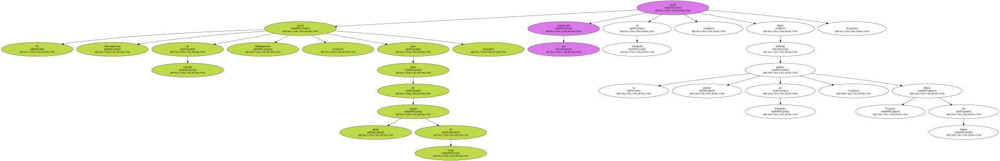
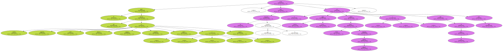
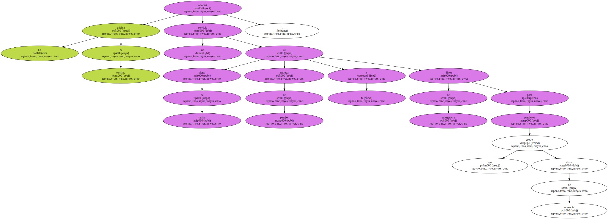
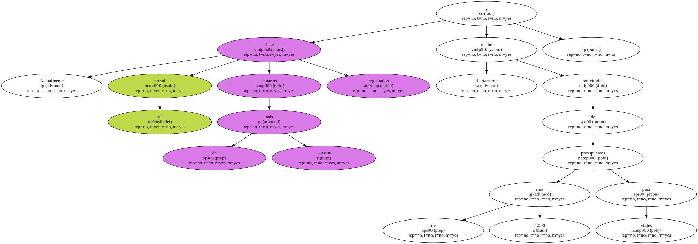

El portal iberoamericano de turismo Despegar.com , para venta de pasajes aéreos en línea , inició sus operaciones en Venezuela , según informó la gerente general en Venezuela , María Virginia De Zabala.
El sitio , que lleva seis meses en el mercado y está presente en siete países iberoamericanos , fue diseñado para agilizar de manera virtual las operaciones que requiere el turista para planificar sus viajes , indicó la ejecutiva.

El portal que funciona también en Argentina , Chile , México , Uruguay , Colombia , Brasil y España , cuenta entre los inversores que lo respaldan con el grupo hotelero Accor , Merril Lynch Global Emerging Markets Partners , y Tate & Furst Inc , entre otros.
La página de turismo ofrecerá un servicio de alerta de tarifas , entrega de pasajes y línea de emergencia para pasajeros que deben viajar de urgencia.
Actualmente el portal tiene más de 120.000 usuarios registrados y diariamente recibe solicitudes de más de 4.000 presupuestos para viajes.
